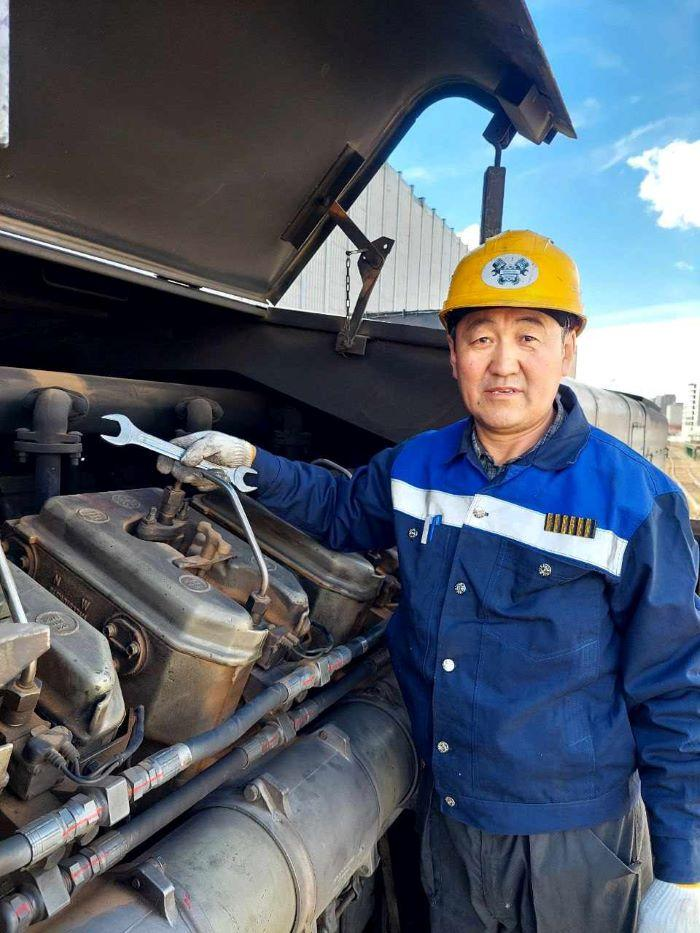
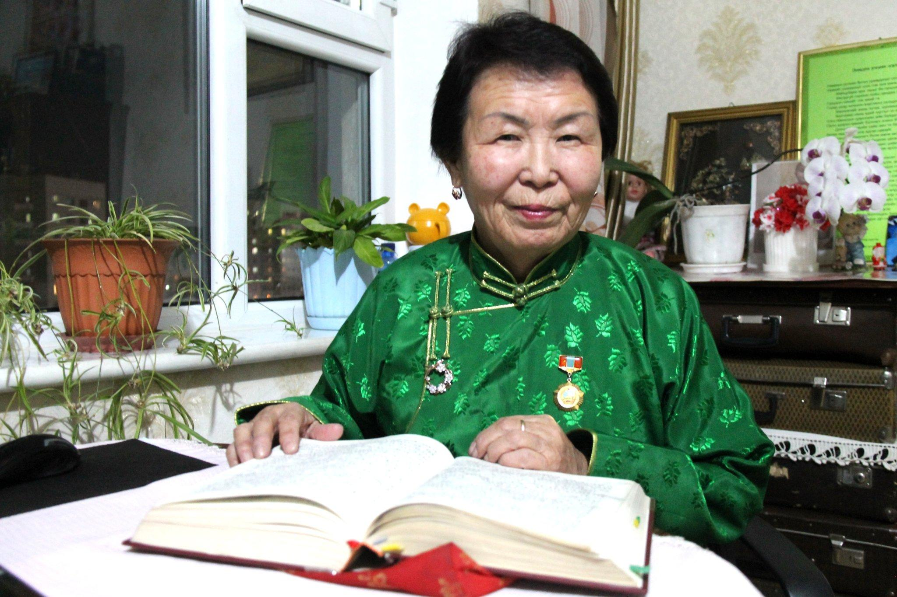
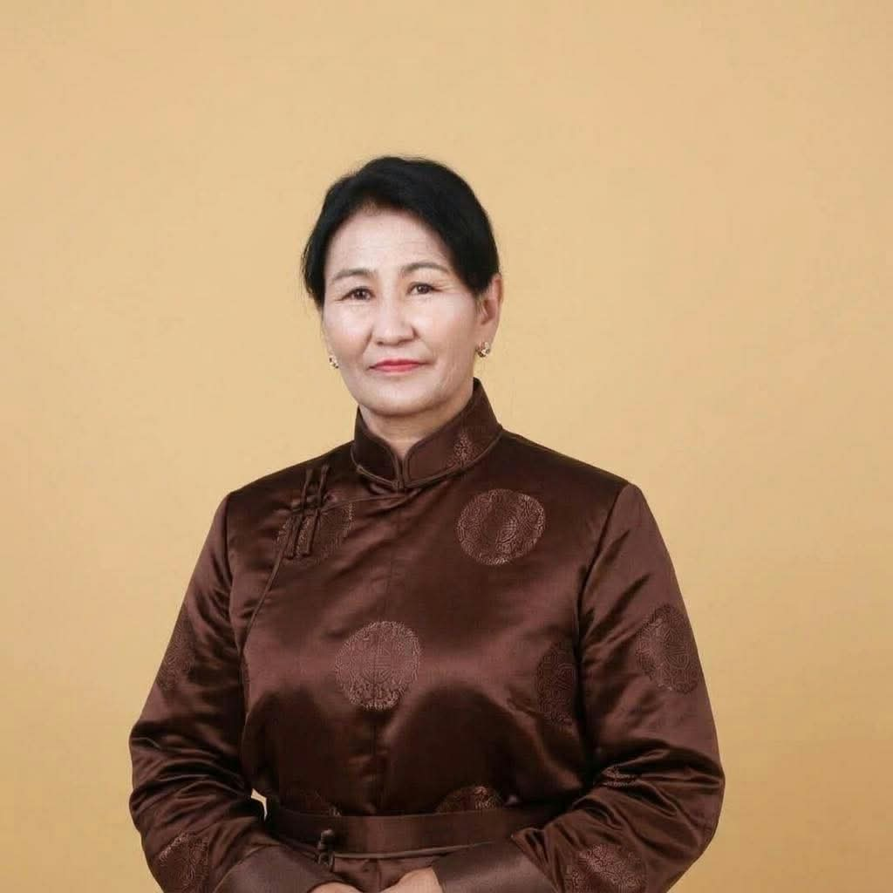
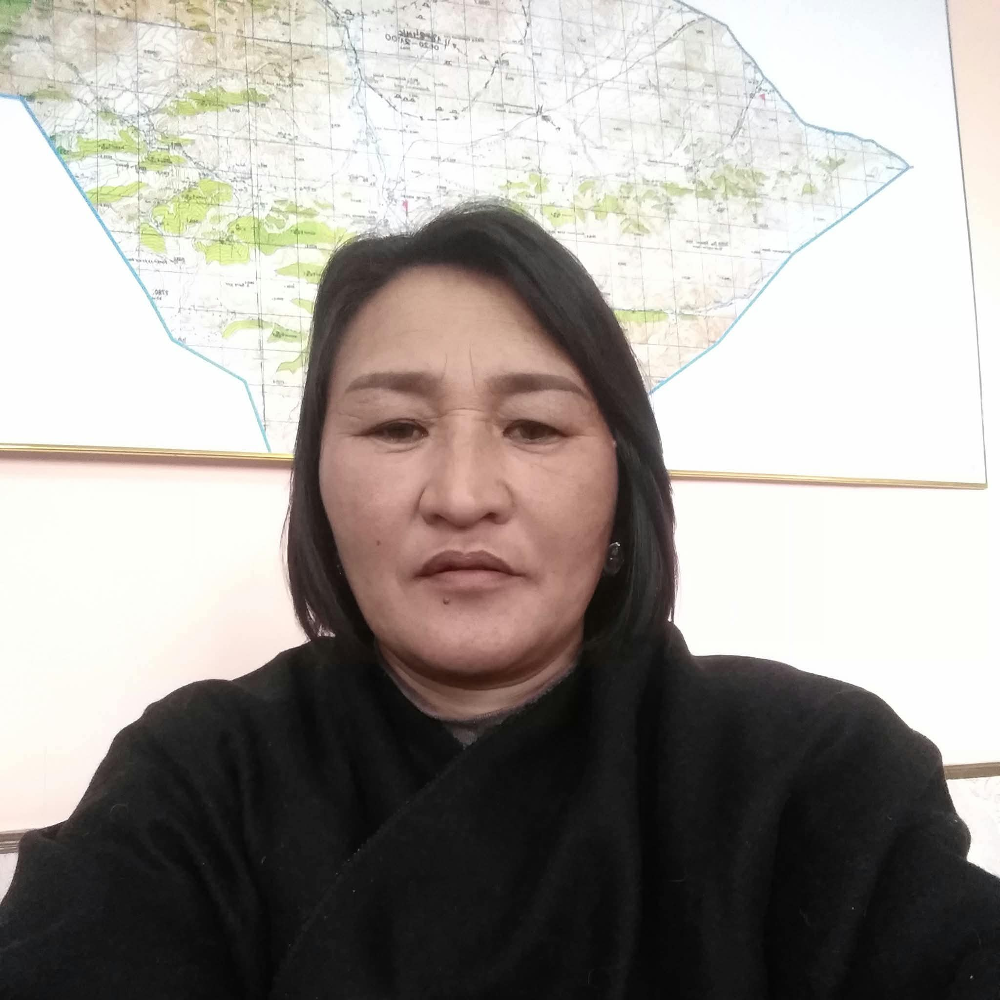
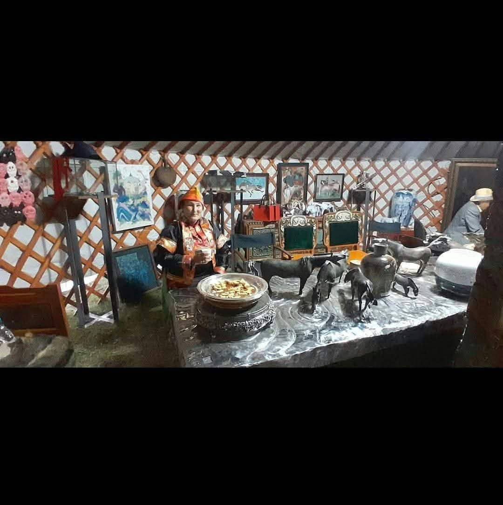
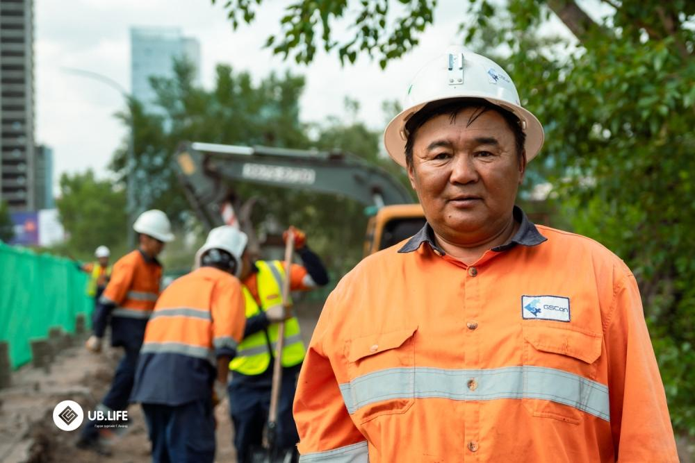
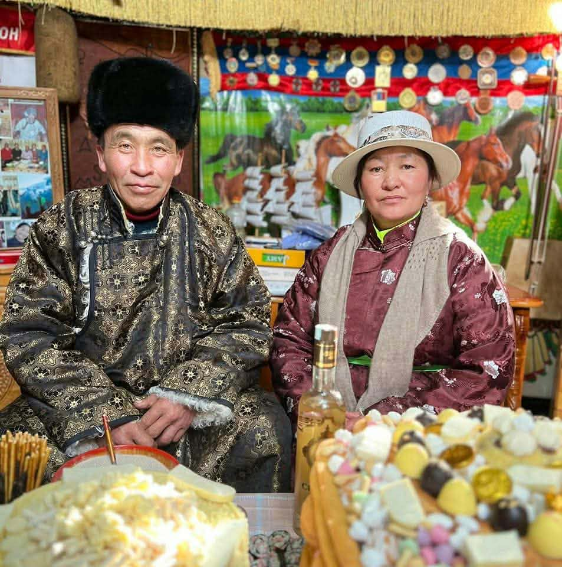
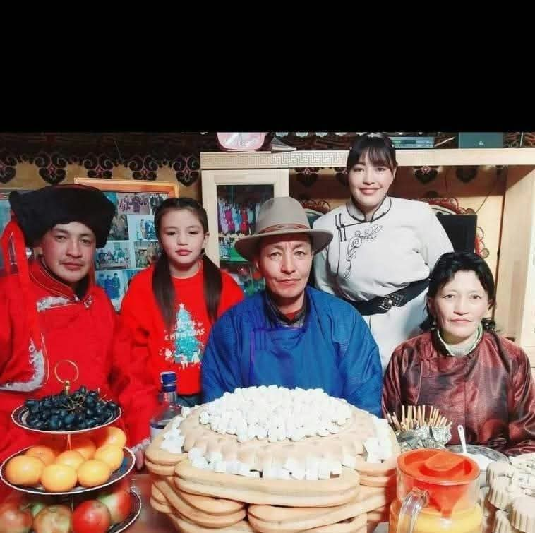
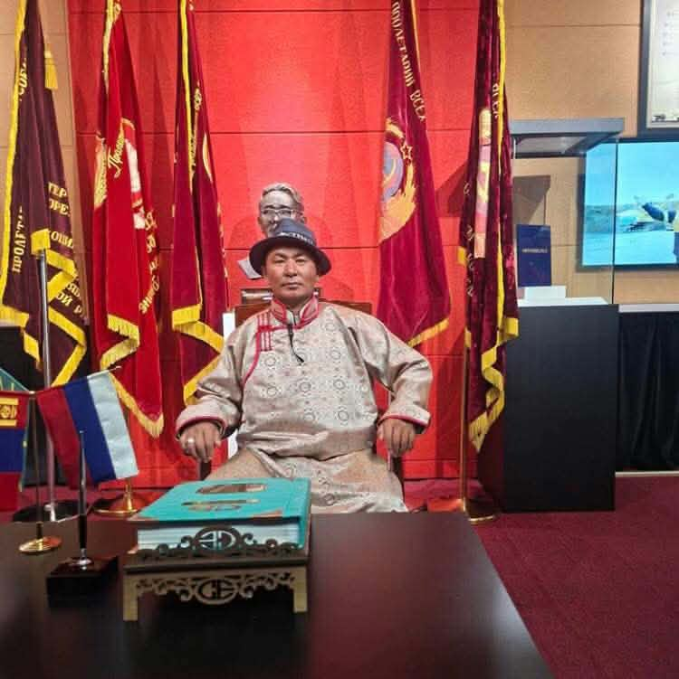
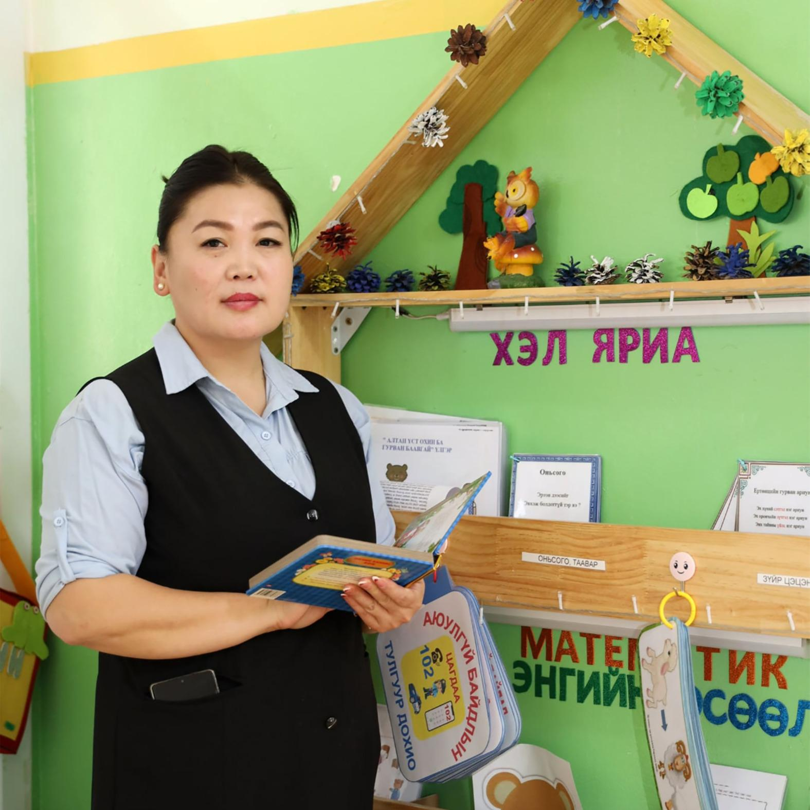

Аавын ахААВЫН ТАЛ
Нямаагийн Дагвадорж
Тээврийн жолооч, механикч
Төрсөн огноо1965 он
Төрсөн газарУвс аймаг, Тариалан сум
Ажил, мэргэжилТээврийн жолооч, механикч
Гэр бүлийн байр суурьАавын ах
Товч намтар
ТАНИЛЦУУЛГАТехник хэрэгсэлд багаасаа сонирхолтой байсан тул авто механикийн чиглэлээр суралцаж, хот хоорондын болон уул уурхайн хүнд даацын тээвэрт олон жил ажилласан.
Эцэг эх
2 хүнАх, эгч, дүү нар
10 хүн
Нямаагийн Дуламсүрэн
Аавын том эгч Профайл үзэх
Нямаагийн Цэнд-Аюуш
Аавын эгч Профайл үзэх
Нямаагийн Дарьбазар
Аавын ах Профайл үзэх
Нямаагийн Орос
Аавын ах Профайл үзэх
Нямаагийн Шагдарсүрэн
Аавын ах Профайл үзэх
Нямаагийн Тогтохбаяр
Аавын ах Профайл үзэх
Нямаагийн Батсүх
Аавын ах Профайл үзэх
Нямаагийн Отгонбаяр
Аав Профайл үзэх
Нямаагийн Дүүбаатар
Аавын дүү Профайл үзэх